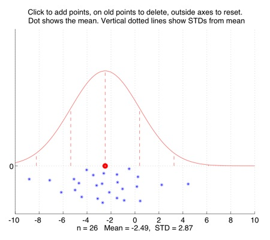
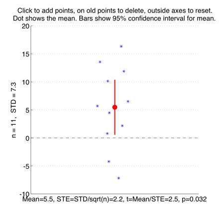
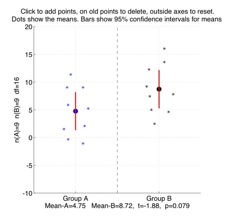
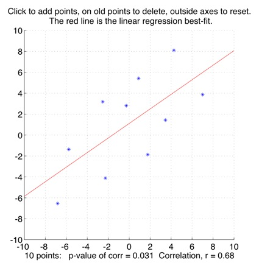

Rajeev Raizada: Interactive Matlab and Python tutorials for intro stats
Some interactive Matlab and Python programs for introductory statistics
Here are some interactive tutorial files, designed to illustrate basic
concepts in statistics. Running the code opens up an interactive figure
window. When you click on a figure to add new points, the statistical tests
shown in the figure change accordingly.
Please feel more than free to use the code for teaching,
and if you do, please
mail me with comments and feedback.
(Note added Jan.2012: I am grateful to
Prof. Eugene Gallagher of U.Mass Boston for very helpful feedback about the
tutorials. His course "Introduction to Applied Statistics" incorporating
the Matlab versions of these tutorials can be found on
OpenCourseWare, along
withtheMatlabfiles.)
The code has lots of comments in it,
which attempt to explain the concepts as explicitly
as possible. No prior knowledge of Matlab, Python or statistics
is assumed.
Here's a YouTube video showing the demos in action:
The Matlab programs require the Matlab statistics toolbox.
The Python programs require the
SciPy and
Matplotlib
modules.
Probably the easiest way to get these modules all at once
is to install the Enthought Python Distribution, which
you can get for free if you are at an academic institution,
from
here.
If you are not at an academic institution, you can get them all for
free from the individual links above.
Screenshots, and some suggested tutorial exercises to try out using the demo
code, are below. The suggested exercises can also be found as comments
at the beginning of the code the of programs themselves.
interactive_mean_std_normal_distribution.m and
interactive_mean_std_normal_distribution.py
Interactively plot points
to show their mean, standard deviation,
and the Normal distribution with that mean and SD.

Some tutorial exercises which might be useful to try:
1. Click to add n=10 points.
Their mean x-value is the large red dot.
The vertical lines show standard deviation (SD) distances from the mean.
How many of the points lie within one SD of the mean?
How many of the points lie within two SDs of the mean?
2. Click to add more points, putting most of them near the mean.
How many points do you need altogether before some of them
start to lie more than two SDs away from the mean?
3. When it is three standard deviations away from the mean,
the bell-shaped Normal distribution curve is very close to zero.
It is so close that you might not even be able to see
the very short vertical dotted lines at the 3 SD marks.
Click to add a lot of points near the mean,
so that the Normal curve gets taller and thinner,
and add a couple of far-distant points at the sides.
See if you can get some points to lie more than 3 SDs from the mean.
interactive_one_sample_t_test.m and
interactive_one_sample_t_test.py
Interactively plot points
to show the one-sample t-test of the y-values, against zero.

Some tutorial exercises which might be useful to try:
1. Click to make 10 points with a mean y-value of around 5,
and a standard deviation of around 10.
(The points will need to be quite spread-out for this).
The red bars show the 95% confidence interval.
This means that if the data points were randomly sampled
from a broader population, then we can be 95% sure
that the actual mean of that broader population
sits somewhere within that confidence-interval.
Does this 95% confidence interval include the value y=0?
What is the size of the p-value of the t-test?
The meaning of this p-value is that it is the probability of observing
that t-value, if the population that the points were sampled from
actually had a mean equal to zero.
2. Now add another 10 points, keeping the mean the same at around 5,
and the standard devation the same at around 10.
What happens to the size of the 95% confidence interval?
Does this confidence interval include y=0 now?
What is the new p-value?
interactive_two_sample_t_test.m and
interactive_two_sample_t_test.py
Interactively plot points
to show a two-sample t-test,
comparing two different group-means against each other.

Some tutorial exercises which might be useful to try:
1. Click in the left-half of the figure
to make a few points in Group A with a mean of around 5,
and in the right-half to make a few points in Group B
with a mean of around 10.
The red bars show the 95% confidence interval for each group.
This means that if the data points were randomly sampled
from a broader group-population, then we can be 95% sure
that the actual mean of that broader group-population
sits somewhere within that confidence-interval.
2. What is the size of the p-value of the two-sample t-test for the groups you made?
What is the size of the t-value for the difference between the two group-means?
The meaning of the p-value is that it is the probability of observing
that t-value, if the two group-populations that the data points
were sampled from actually had the same means as each other.
How much overlap is there between the 95% confidence intervals
of the two groups?
3. Click to add or delete some points so that the confidence intervals
of the two groups become more overlapping with each other.
What is the new t-value? What is the new p-value?
4. Can you make two groups which have quite similar mean-values,
but where those mean-values are still significantly different from each other?
5. Now try to make two groups which have very different means,
but where the mean-values are *not* significantly different from each other.
interactive_correlation_plot.m and
interactive_correlation_plot.py
Interactively plot points
to show the correlation between the x and y directions.

Some tutorial exercises which might be useful to try:
1. Click to make a few points in more or less a straight line.
What is the correlation value?
Now add a point far away from the line.
What does adding that point do to the correlation value?
Try deleting the point by clicking on it, then re-adding it, to
compare.
2. Click outside the axes to reset the plot.
Now put in about 10 points in a oval-ish cloud,
deleting and adjusting them so that you get a correlation
of around r=0.6.
What is the size of the p-value associated with this correlation?
(This p-value is the probability of observing this r-value
if the population the points were sampled from actually had zero correlation).
Now add another 10 points, so that there are 20 in all,
while keeping the correlation value at r=0.6.
What is the p-value now?
3. Click outside the axes to reset the plot.
Now make in turn, approximately, each of the four plots
shown in Anscombe's Quartet:
What does this tell you about how only knowing a correlation-value
might give you a misleading picture of the data?